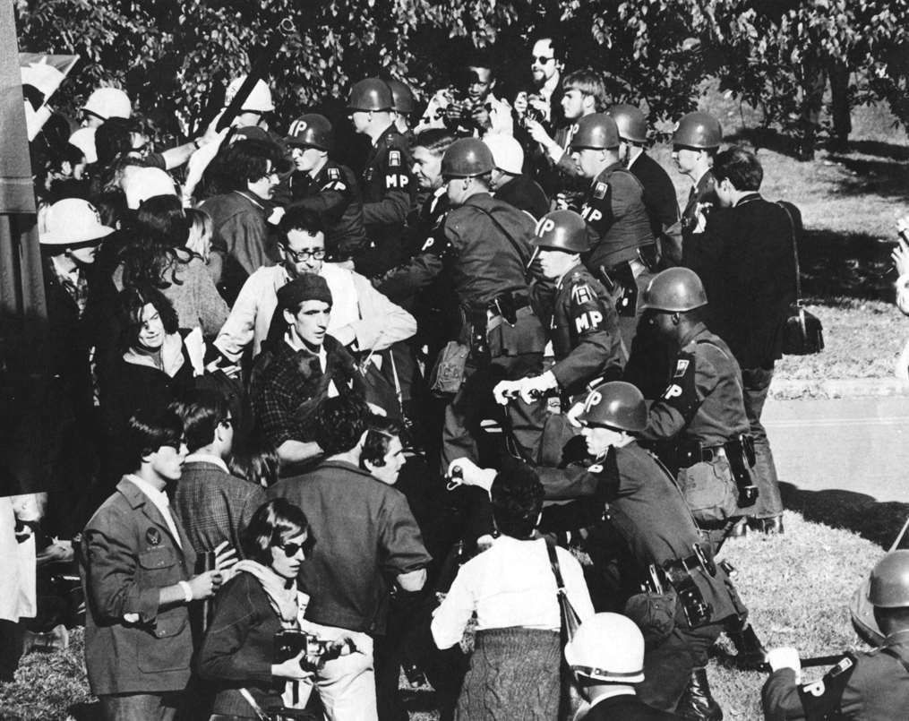

哲学从一开始就显示出一种颠覆性。柏拉图的《申辩篇》讲述了苏格拉底如何受到雅典公民谴责，被指腐化青年品行并怀疑神灵。这一控诉是有些道理的。苏格拉底对传统观念提出了疑问。他使存在已久的信念接受理性的审视，并对超越既定秩序的问题进行了思考。众所周知的“批判理论”就建立在这一遗产之上。这种新的哲学倾向形成于第一次世界大战和第二次世界大战之间，它最重要的代表人物对根植于西方文明之中的剥削、压迫和异化发动了无情的攻击。
批判理论拒绝将自由与任何制度安排或固化的思想体系联系在一起。它对相互竞争的理论和既有实践形式之中隐含的假设与意图提出质疑。对于所谓的“长青哲学”，它并无用处。批判理论坚持认为，思想应当回应不断变化的历史环境中产生的新问题以及实现解放的新的可能性。批判理论具有跨学科性和独特的实验性，对传统和所有绝对主张深表怀疑，不仅始终关注事物当下如何，也关注其可能如何以及应当如何。这种道德要求促使其主要思想家发展出一系列主题和一种新的批判方法，从而改变了我们对社会的理解。
批判理论有许多渊源。伊曼努尔·康德认为道德自主是个人的最高道德准则。他为批判理论提供了关于科学理性的定义和以自由前景面对现实的目标。同时，黑格尔认为意识是历史的动力，思想与现实问题相关，哲学是“被把握在思想中的它的时代”。批判理论家学会了从总体着眼解释特定事物。自由的时刻出现在被奴役者和被剥削者要求得到承认之时。
康德和黑格尔都体现了源于17和18世纪欧洲启蒙运动的世界主义和普遍主义假设。他们依靠理性对抗迷信、偏见、暴行和制度性权威的专断行使。他们还对美学所表达的人文希望、宗教的救赎期许以及关于理论与实践关系的新思路进行了思索。青年卡尔·马克思以其有关人类解放的乌托邦思想走得更远。
批判理论是在马克思主义的思想熔炉中构想出来的。但其代表人物从一开始便对经济决定论、历史阶段论和关于社会主义“必然”胜利的宿命观不以为然。他们关心的与其说是马克思所说的经济“基础”，不如说是社会的政治和文化“上层建筑”。他们的马克思主义属于一种不同的类型。相比于其系统主张、对异化和物化的关注、与启蒙理想的复杂关系、乌托邦要素、对意识形态作用的重视以及抵制个体畸变的承诺，他们更着重强调的是其批判方法。在“西方马克思主义”的代表人物卡尔·柯尔施和格奥尔格·卢卡奇构想批判理论时，这一系列主题构成了它的核心内容。两位思想家为批判计划提供了框架，随后社会研究所，或者说“法兰克福学派”便以此而闻名。
其主要成员包括以精通音乐和哲学而扬名的西奥多·W.阿多诺，他从1928年开始与研究所合作，却在十年后才成为正式成员；天才心理学家埃里希·弗洛姆，他从1930年开始为期九年的合作；在许多领域才华横溢的哲学家赫伯特·马尔库塞，1933年加盟；这些思想家中最具创造力的瓦尔特·本雅明，从未正式成为一分子；于尔根·哈贝马斯，1968年后成为其领衔哲学家，无疑也是研究所最多产的思想家。然而，研究所的指路明灯是马克斯·霍克海默。他将这些杰出的知识分子凝聚到一起，为社会批判理论搭建起跨学科的基础。
法兰克福学派起初相信其思想工作会对无产阶级革命行动的实际前景有所裨益。然而，随着20世纪30年代的逝去，革命在苏联走向沉寂，在欧洲也前途暗淡。法西斯主义已经肆无忌惮地进入政治生活，起初与现代性相伴的人道希望显得愈发天真。法兰克福学派使左翼人士对于科学技术固有的进步特征、大众教育以及民众政治的长久信念受到尖锐的拷问，以此记录了这一历史性的转变。
法兰克福学派从阿图尔·叔本华、弗里德里希·尼采、弗兰兹·卡夫卡、马塞尔·普鲁斯特、塞缪尔·贝克特和现代主义遗产那里吸收了深刻的见解，借此重新塑造了历史辩证法，启蒙运动和马克思主义随之从它们未实现的理想的角度得到正视。批判理论重建被遗忘的乌托邦形象和被忽视的反抗理想的历程，是在实现它们的可能性似乎不复存在的情况下开始的。其成果是只在当代学者中盛行起来的一种新形式的“否定辩证法”。
法兰克福学派一直认为，拥护既定秩序的哲学是促成社会解放的障碍。对绝对基础、分析范畴以及证明真理主张的固定标准的执著，遭到其成员的谴责。他们看到了两大元凶：现象学 及其关于个体如何体验存在的固有本体论主张，以及要求按自然科学标准来分析社会的实证主义 。两者都因非历史地对待社会并排除真正的主体性而遭到抨击。批判理论被认为是一种替代性选择。它的动力来自变革意图和对现代生活的文化的格外关注。
异化和物化是最常与批判理论联系在一起的两个概念。通过将这两个概念从历史背景中剥离出来，前者通常被视为剥削和分工的心理结果，后者常被视为人如何被当作“物”受到工具式的对待。20世纪20年代西方马克思主义者已经对异化和物化做出开创性研究，但法兰克福学派对这两个复杂范畴如何影响发达工业社会中的个人，提出了一种独特的理解。
他们研究了思想正通过哪些方式沦为关于何者有效且有利可图的机械看法，道德反思正以何种方式趋向消亡，审美趣味正以何种方式日益标准化。批判理论家们警觉地注意到解释现代社会何以变得愈加困难。由此，他们从异化和物化如何危及主体性的发挥、剥夺世界的意义和目标并使个体成为机器上的一个齿轮的角度，对它们进行了分析。
奥斯威辛集中营被认为体现了异化和物化最根本的含义。这一转折性事件比18世纪里斯本地震更加彻底地击碎了关于进步的乐观设想。纳粹集中营还历历在目，广岛和长崎又被焚巢荡穴，关于苏联古拉格的新报告浮出水面，麦卡锡主义在美国甚嚣尘上，于法兰克福学派而言，西方文明带来的似乎不是人的发展，而是一种前所未有的野蛮状态。他们意识到，比起通常对于资本主义的老套批评，需要从激进思想中获得更多的东西。
一个官僚化治理的大众社会正显而易见地整合着一切反抗形式，抹杀着真正的个性，孕育着带有权威偏好的人格结构。一致性正在摧毁自主性。如果资本主义的发展与标准化和物化相关，那么进步实际上是一种倒退。因此，左派人士不加批判地接受的与启蒙运动相关的那些幻象需要重新审视，现代性本身也需要批判。
法兰克福学派的所有成员一致认为，需要加强教育以抵抗权威趋势。但尚不清楚的是，这样的教育在一个全面管制的社会中可能有多大效果。一个新的“文化产业”——可以说是关于批判理论最著名的概念——为了使销量最大化，正不停地力争降低大众品味。真正的个人体验和阶级意识正受到发达资本主义的消费主义的威胁。这一切使得霍克海默、阿多诺和马尔库塞提出，一部作品的受欢迎程度——不考虑它的政治讯息——取决于它的激进冲动在多大程度上被整合到体制之中。这些思想家成为现代主义实验艺术的拥护者，而在战后的紧张氛围中，他们也支持以一种“伊索”式复杂难懂的写作方式掩藏他们的激进信念。不过，在参与20世纪60年代起义的激进知识分子中间，批判理论深奥、含蓄的风格只会增强它的吸引力。

图1 20世纪60年代学生运动中的激进知识分子深受批判理论和法兰克福学派的影响
批判理论始终具有预见性。它的拥护者预测到日常生活和个人体验的转变。法兰克福学派不仅对维护既定秩序的历史观提出疑问，而且提出一种激进的替代选择。欧洲激进人士将其思想运用于家庭、性和教育的重构之中。他们试图带来一种新的没有暴行和竞争的乌托邦感受。但法兰克福学派围绕20世纪60年代的运动产生了分歧。阿多诺和霍克海默是持怀疑态度的。他们质疑反文化和对传统的攻击、零星的暴力和反智主义以及激进活动家应该给予民主的敌人的安慰。他们将20世纪60年代的群众运动与两次世界大战之间的群众运动联系起来，也将乌托邦思想与极权主义联系在一起。
真正的反抗此时似乎需要强调批判传统内在的否定要素。尤其是，阿多诺提出，问题不再仅仅是拒绝将自由同任何制度或总体联系起来，而是界定个体与社会之间的“非同一性”（并侧重其紧张关系）。对有组织反抗和制度政治的关注半途而废，取而代之的是一种审美——哲学式的批判，就霍克海默而言是准宗教式的“对全然的他者的渴望”。法兰克福学派依旧采用承袭于黑格尔和马克思的方法。其政治上最保守的成员依然认为主体性受困于其抵制的东西：商品形态、大众文化以及官僚社会。但他们对普遍性主张、哲学基础和固化的叙述方式提出了新的怀疑。
“否定辩证法”预见到许多与后现代主义和后结构主义有关的问题。事实上，它们如今甚至经常被视作批判理论的表达。解构主义或后结构主义方法涌入最具声望的刊物以及从人类学、电影到宗教学、语言学、政治学等多个学科。它们带来了有关种族、性别和后殖民世界的新见解。然而在此过程中，批判理论失去了对社会做出综合性批判、对一种有意义的政治学进行概念化以及提出新的解放理想的能力。文本解释、文化执著以及形而上学争论越发使批判理论成为其自身成就的牺牲品。结果是一场持续的认同危机。
如今，批判理论家必须回顾过去以便向前发展。法兰克福学派丰富了我们关于家庭、性压抑、教育学、种族灭绝、娱乐、文学分析以及众多其他问题的理解。对于经济、国家、公共领域、法律和全球生活中显著的权力失衡，批判理论也有一些能带来教益的东西。即便那些对启蒙运动批判性最强的思想家，也为启蒙运动的合理辩护提供了重要依据。自由主义和社会主义也是如此。阐明压迫的环境、开辟反抗途径以及重塑解放理想，依然属于批判理论的范畴。要使一个新的全球社会中的变革前景更为突出，就需要新的政治 视角。如今的问题是对批判理论的既定形态采用批判方法。这是顺理成章的。只有通过这一方式，才可能对批判事业最初的精神保持忠诚。